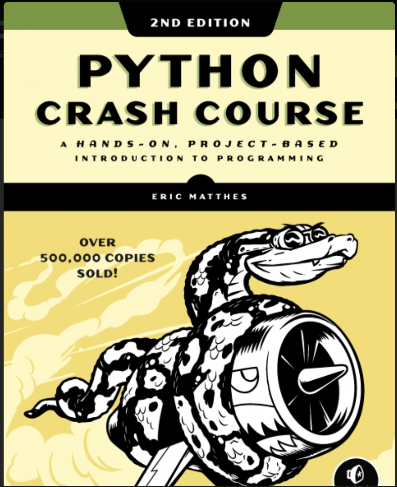
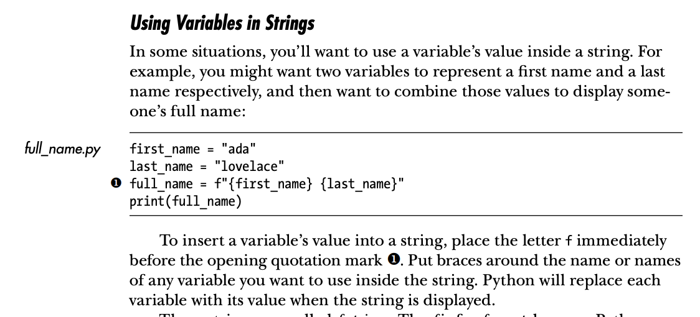
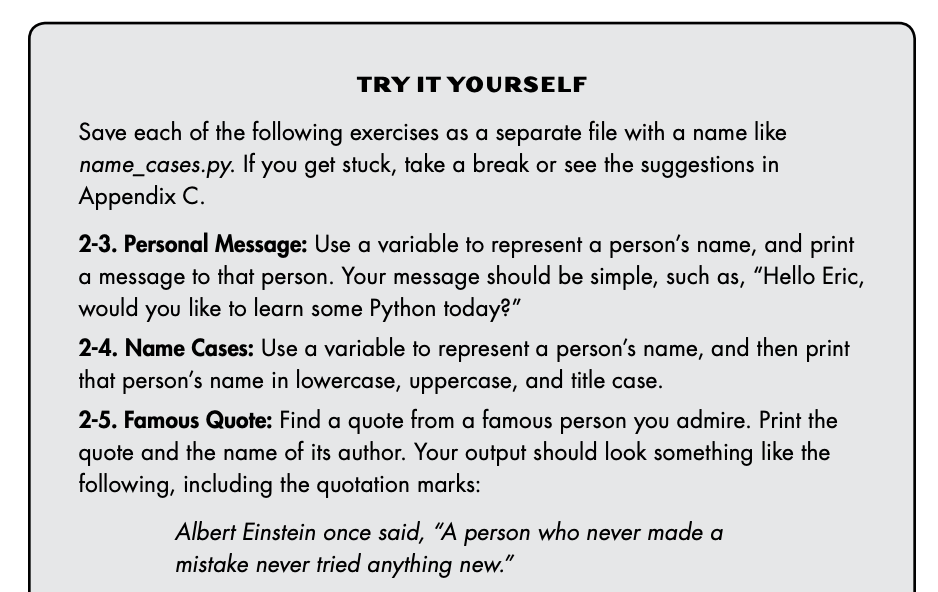

Table of Contents
1. はじめに
Pythonの推薦本を英語で検索すると、どのWebサイトでも大抵紹介されているPython Crash Course: A Hands-On, Project-Based Introduction to Programming, Eric Matthes。Amazonのレビューを見ても大絶賛で、公式サイトによると世界で一番売れているPython本だそうです。
Python Crash Course is the world’s best-selling guide to the Python programming language.
私はこの本を使ってPythonに入門しました。この記事では、Python Crash Courseの紹介をしたいと思います。
2. Python Crash Courseの紹介

2.1. 結論
いきなり結論ですが、Python Crash Course (以下Crash Courseと略)はとても優れたPython入門書でした。あらゆるレベルの入門者に勧められると思います。特に優れているのが以下の点です。
- 豊富なハンズオン
- 実践的な3つの異なるプロジェクト
- 丁寧でわかりやすい説明
2.2. 本書の構成
Crash CourseはPart I: BASICSとPART II: PROJECTSの2パートに分かれます。
2.2.1. Part I: BASICS
Part IでPythonの基本について説明します。本のタイトルに「ハンズオン」が含まれているだけあって、code snippetsを入力し、実際に動かしながら頭で理解したことを体(手)に覚え込ませていきます。code snippetsの出し方も上手です。一つのファイルの部分が少しずつ出てきて、一度に入力する量もいい案配です。

比較的短めの各章の最後には、TRY IT YOURSELFというハンズオンがあり、短いサイクルで復習します。体で覚え、定着させるには繰り返しが重要ですが、そのために必要十分なハンズオンの量になっていると思います。

2.2.2. Part II: PROJECTS
Part IIはPart Iで覚えたPythonの基礎知識を使って、プロジェクト形式である程度まとまったプログラムを組みます。これが実践的でとても楽しかったです。
最初のプロジェクトはインベーダーゲーム似のシューティングゲームを作ります。ゲームライブラリとしてはpygameを使います。個人的にはこれがヒットでした。プロジェクトを終えたら、読むのをやめてゲーム作りしようと思ったくらいです。(ぐっと堪えてプロジェクト3まで勧めましたが)
Pythonはbattery includedと言われるだけあって、標準以外のライブラリが充実しています。ライブラリの導入の仕方、使い方を覚えるのも大事です。プロジェクトでは、ライブラリをどうやって使いこなすかがわかるようになっています。
プロジェクトでは、通常の開発と同様に少しずつ作っていきます。最初は自機のビットマップを表示するだけ、次にキーで動かす、更に敵を1機表示する、ループで大量に表示する、弾を打つ、敵をやっつける、etc.。少しずつプログラムが出来てくるのが楽しいです。
プログラムが成長するにつれて、リファクタリングすることもハンズオンとして学びます。長くなりすぎた部分を関数として切り出して独立させます。Pythonの入門書ですが、こういった、ソフトウエア開発で一般に必要になることもカバーしています。
次のプロジェクトは、ネットから入手できるデータをmatplotlib等のライブラリを使ってビジュアル化します。スクレイピングの基礎の基礎のようなことをします。このプロジェクトは実践的で、即実用になりますが、若干掘り下げが足りないように思いました。入門書にそこまで求めるのはやりすぎでしょうか。。。繰り返しますが、このプロジェクトで学んだ内容はすぐにでも応用が利きます。
最後のプロジェクトは、Djangoを使って動的ブログジェネレーター的なものを作ります。野心的なプロジェクトですが、本書のスペース不足のせいか、いきなり難易度が上がります。難しいのはPythonではなく、Djangoの使い方なのですが。慣れないDjangoの設定ファイルやhtmlファイルを大量に書くのは大変で、動かなかったときのデバッグは更に厳しいです。
個人的には、本文のハンズオンを2回繰り返し、TRY IT YOURSELFまでやって、やっとDjangoの使い方がわかってきました。本書を離れて、DjangoについてWebで調べたりもしました。ここまでやると、だいぶ力が付くのでは無いかと思います。
2.3. 優れている点
2.3.1. 説明がわかりやすい
私はこの本の他にはIntroducing Pythonしか読んでいないので、他にもわかりやすいPython入門書はあるかもしれません。しかし、それにしてもCrash Courseの説明はとてもわかりやすかったです。
説明が上手なことがありますが、説明すべき内容の絞り方もうまいです。枝葉のことがあまり書いて無い一方で、大事なことは繰り返し出てきます。この本はまず基本概念(例えば「リストとは」)を説明し、繰り返しのハンズオンで定着させるスタイルなので、最初のわかりやすさは特に重要です。
2.3.2. 豊富なハンズオン
入門書を読んだばかりの初心者がいざコーディングしようとすると「forループはどうやって回すのだっけ」や「else ifだっけ、elifだっけ」、「":"は付ける? いらない?」といったことで悩みます(私だけ?)。そして、いざ動かしてみてエラーが出ると、エラーメッセージの意味もわからず、何がどう悪いのか見当もつきません。こうして、挫折してしまうパターンが意外と多いように思います。
これを乗り越える(私が思うに)唯一の方法が、ハンズオンで体(手)に覚え込ませることです。本書の最も優れた特長は、ハンズオンが豊富にあるということで、上で挙げたようなことは、悩む前に体が覚えてしまいます。
2.3.3. 実践的なプロジェクト
豊富なハンズオンと並んで本書のすぐれた特長であるのが、3つの実践的なプロジェクトです。プロジェクトを通じて、Pythonの基本だけでなく、ソフトウエア開発について総合的に学ぶことができます。
入門書を終えたばかりのレベルと、実際にコーディングできるレベルの間には溝があると思いますが、ハンズオンプロジェクトがこの溝を埋めてくれます。500ページ以上と、少し構えてしまう長さの本ですが、一般的な入門書の範疇を超えた内容をカバーしているので決して長すぎないと思います。(日本語の本なら、上下巻に分かれるでしょうか)
3. 英語で技術書を読む
Python Crash Courseはとても優れたPython入門書ですが、なぜか日本語には翻訳されていませんね。(売れると思うのに。。)
個人的に、英語の技術書を読むことはとてもお勧めです。技術書の英語は平易で、高校生以上の、英語アレルギーが無い人であれば読めると思います。(なお、上で挙げたIntroducing Pythonの英語は少しだけ難しいので、英語を読むのが初めてな人には勧めません。とてもよい本ですが、初心者向け入門書ではありません。)
また、英語を読むことに慣れてくると、日本語よりもはるかに豊富なインターネット上の技術情報にアクセスできるようになります。
Pythonに入門したいけどよい参考書は無いか、と探している方は、英語の勉強も兼ねて、Python Crash Courseを使って入門してみるのはいかがでしょうか。
なお、2章まるまるこちらからダウンロードできます。 https://nostarch.com/pythoncrashcourse2e 画面写真はこの2章を使いました。
4. 終わりに
私はPython Crash Courseを使って、ようやく挫折せずにPythonでプログラムが組めるようになりました。感謝の気持ちを込めて、この記事で紹介させていただきました。